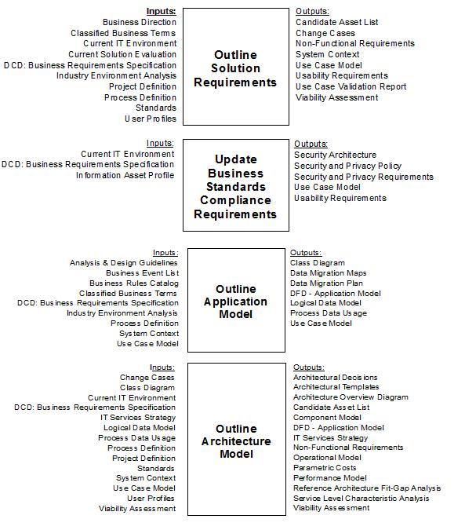

| Guideline: Performance Engineering Activities Supporting the System Baseline |
 |
|
| Related Elements |
|---|
1 DescriptionIn an Enterprise SE&A project, the System Baseline contains the overall requirements for the system to be developed or enhanced to meet the customer requirements articulated in the Customer Baseline. Figure 1 - System Baseline major activities in SE Capability Pattern
In the SE Capability Pattern, a number of work products are developed before it is time to prepare the System Baseline,
as shown below.
 The performance engineering team has a vested interest in ensuring that the performance and capacity aspects of the system requirements are well-defined, measurable, verifiable and achievable. This will prove helpful to the later SE&A baselines as the requirements are elaborated and implemented by component, which will in turn enhance the likelihood that the overall project will satisfy the customer’s requirements. Deliverables which are deemed deficient from a performance and capacity standpoint may lead to the entry of a defect, which is then taken into account during the SRR Scorecard process.
Around this time, the PE team should be developing an overall plan for applying PE throughout the life of the project,
documenting specific tasks, work products, deliverables, strategies and resources needed to implement the PE
strategy. This plan should not only take into account PE work done in support of SE&A activities (i.e.
requirements and design participation, volumetric and technical research, early estimation and modeling), but also PE
work done in support of implementation, testing and deployment activities as well. |
| © Copyright IBM Corp. 1987, 2012 All Rights Reserved Property of IBM These materials are intended only for use as part of an IBM engagement |